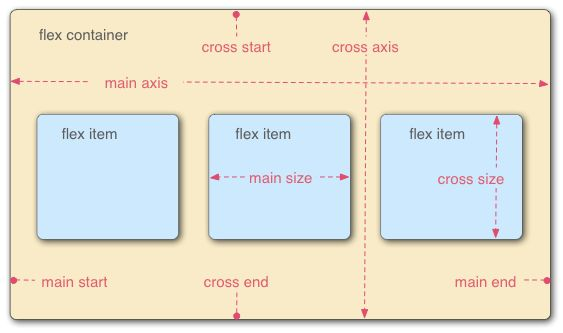

flex三个对齐属性的记忆方式原文出处:本文由博客园博主孑孓子提供。
原文连接:https://www.cnblogs.com/handboy/p/11397039.html
今天在群里聊天有人说 flex的那几个居中属性好难记，时不时都要尝试一下，或者查看一下文档，现在我把我自己的记忆方式分享一下。。。
1. flex的居中主要是通过这三个属性来实现的：
- justify-content: flex-start | flex-end | center | space-between | space-around;
- align-items: flex-start | flex-end | center | baseline | stretch;
- align-content: flex-start | flex-end | center | space-between | space-around | stretch;

2. 总结
- justify-content主要是针对主轴（水平轴，x轴，row）上的居中方式
- align-items主要是针对交叉轴（垂直轴，y轴，column）上的居中方式
- align-content是针对多行的时候交叉轴（垂直轴，y轴，column）上的居中方式（在单行显示时align-content: center一点效果都没有，但是今天发现Mac上的Chrome76竟然有效果，但是单行在旧版和其他浏览器还是无效的，建议还是别只用这个属性 ）
3. 记忆方式
- justify-content 的两个单词开头字母为 jc即警察的意思，我们看过X战警，因此是针对x轴的居中；警察肯定有肌肉（row），所以也可以理解为是row上面的居中方式；警察也是一个国家的主要（main) 力量，所以还可以理解为主轴的对齐方式；警察的水平不容小觑，理解为水平轴的居中。 随便选一个记忆方式，我比较喜欢X战警记忆。
- align-items 的两个单词开头字母为ai即“爱”， 爱就要轰轰烈烈（column列），所以是列上面的居中方式。也可以看I这个单词，I明显是竖直的，所以代表Y轴上的居中方式。
- align-content 的两个单词字母为ac即爱吃，爱就是轰轰烈烈上面说了，跟c就是吃，中国人一般吃米饭，肯定很多，所以必须多行才有意义。
- 会不会脑子懵了记叉了记多了一个justify-items呢？justify-items的两个字母是ji就是记的意思，所以不要ji，要忘ji，因此flex根本没有这个属性。
原文：https://javascript.shop/2019/08/flex-justify-content-align-items-align-content/